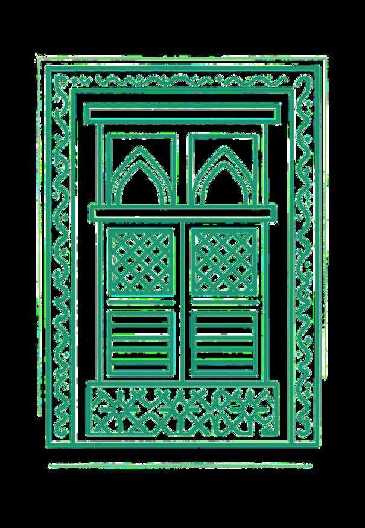

01 / ART & HERITAGE
✦ ✦ ✦ ✦
01 — PORTFOLIO
AMIRAH KHALID
ALMUTAIRI
03 — COLLABORATE
04 — CREDENTIALS
LET’S MAKE SOMETHING MEANINGFUL
+966 53 942 2790
01 — PORTFOLIO
AMIRAH KHALID
ALMUTAIRI
03 — COLLABORATE
04 — CREDENTIALS
LET’S MAKE SOMETHING MEANINGFUL
+966 53 942 2790